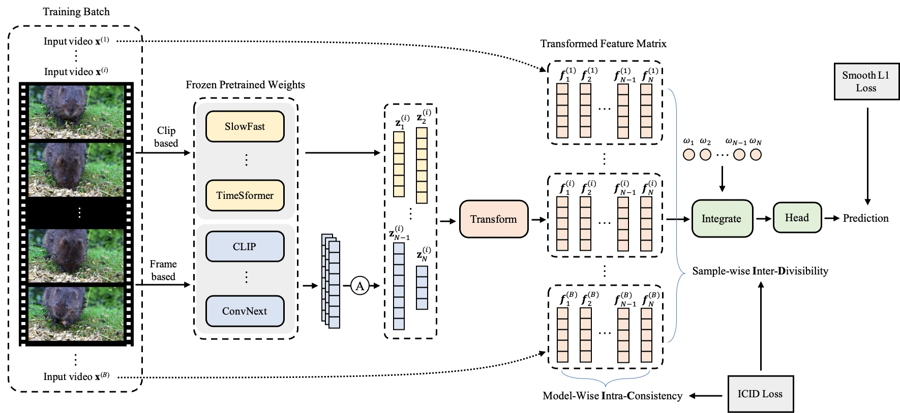
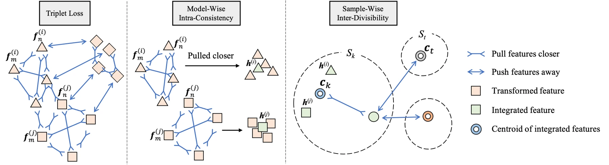

Predicting how a viewer will rate a video requires knowing about its content, its distortions and its motion, and the ground truth is expensive. Subjective scores have to be collected from people one clip at a time, so quality datasets are small by the standards of modern vision.
预测观众会给一段视频打多少分，需要知道它的内容、失真与运动，而其真值很贵：主观分数必须靠人一段一段地采集，因此以现代视觉的标准看，质量数据集都很小。
The obvious workaround is transfer, and the usual version of transfer — fine-tuning one large pretrained backbone — borrows from a single source. Different backbones know different things: objects, motion, texture statistics. None of them was trained to judge quality.
直觉的绕行方案是迁移，而通常那种迁移——微调一个大型预训练骨干——只从单一来源借用知识。不同的骨干懂不同的东西：物体、运动、纹理统计。它们中没有一个是为判断质量而训练的。
PTM-VQA asks whether those complementary representations can be combined into one quality-aware space without fine-tuning any of them. On LSVQ-Test the reported configuration reaches PLCC 0.8637 and SRCC 0.8545, and the backbones are selected by how well their features cluster quality annotations.
PTM-VQA 问的是：这些互补的表示能否在不微调任何一个的前提下，被组合进一个质量感知的空间。在 LSVQ-Test 上，所报配置达到 PLCC 0.8637、SRCC 0.8545；而骨干模型是按其特征对质量标注的聚类表现挑选出来的。
Features come from multiple frozen pretrained models chosen by how well their representations cluster quality-annotated data — the bet is complementarity, and adding every available backbone is explicitly not assumed to help.
特征来自多个冻结的预训练模型，而这些模型是按其表示对质量标注数据的聚类表现挑选出来的——赌的是互补性，并且明确不假定“把所有骨干都加上”一定更好。
Two constraints shape the space: intra-consistency aligns representations of the same video, and inter-divisibility separates groups formed from the quality annotations, so the space is both coherent and predictive.
两个约束塑造这个空间：内部一致性让同一视频的不同表示彼此对齐，组间可分性则把按质量标注划分的组分开——于是该空间既连贯又具有预测力。
PLCC 0.8637 and SRCC 0.8545 on LSVQ-Test, with cross-database tests measuring transfer without fine-tuning on the target set — the output is a quality prediction, not a restoration or a factual claim about content.
LSVQ-Test 上 PLCC 0.8637、SRCC 0.8545，并通过跨库测试衡量不做目标集微调时的迁移能力——输出的是质量预测，不是恢复结果，也不是关于内容的真实性判断。
Several frozen backbones, one space多个冻结骨干，一个空间
Each pretrained model contributes features extracted with its weights frozen — no fine-tuning, no quality labels flowing back into the backbones. That keeps the method cheap and the pretrained knowledge intact, but the representations arrive in incompatible spaces with no shared notion of quality.
每个预训练模型都在权重冻结的状态下贡献特征——没有微调，没有质量标签回流进骨干。这让方法保持廉价、也让预训练知识保持完整，但这些表示抵达时处于互不兼容的空间，对质量没有任何共同概念。
Concatenating them would not fix that. Two backbones can emit feature vectors of the same length that order clips completely differently, and a predictor trained on the concatenation has to learn the correspondence from a small quality dataset — precisely the scarce resource the method was meant to avoid depending on.
把它们拼接起来并不能解决这个问题。两个骨干完全可以输出长度相同、却把片段排成完全不同顺序的特征向量；而基于拼接结果训练的预测器，还必须从小规模质量数据集中学习这种对应关系——那恰恰是该方法本想避免依赖的稀缺资源。
Model selection is therefore part of the method rather than a preliminary step. Candidates are ranked by clustering performance on quality-assessment data, which selects for backbones whose representations already separate quality levels instead of assuming that more sources are always better.
因此模型选择本身就是方法的一部分，而不是一个前置步骤。候选模型按其在质量评测数据上的聚类表现排序，从而挑出那些表示本就能区分质量等级的骨干，而不是假定来源越多越好。


Consistency and separation一致性与可分性
Two objectives shape the shared space, and they pull in different directions on purpose. Intra-consistency brings representations of the same video — however many backbones produced them — into agreement, so the space has a coherent notion of a single clip.
两个目标塑造这个共享空间，而且是刻意朝不同方向拉扯。内部一致性把同一视频的多种表示——无论由多少个骨干产出——拉到一致，使这个空间对单个片段有一个连贯的概念。
Inter-divisibility then separates the groups formed from the quality annotations, so similarly rated clips land near each other and differently rated clips do not. Consistency alone would collapse everything toward one point; separation alone would have nothing coherent to arrange.
组间可分性随后把按质量标注划分开的组分开，使评分相近的片段彼此靠近、评分不同的片段彼此远离。只有一致性会把一切塌缩到一个点；只有可分性则没有任何连贯的东西可供排布。
The pairing is what makes the space quality-aware rather than merely aligned. Alignment is unsupervised and can be achieved with no label at all; the separation term is where subjective scores actually enter, and it is what turns a fused feature into a usable predictor.
正是这一对组合，让该空间成为质量感知的，而不只是对齐的。对齐是无监督的，完全可以在没有任何标签的情况下实现；而主观分数真正进入的地方是可分项——也正是它把融合特征变成了可用的预测器。
What the constraints produce这两个约束产出了什么
Experiments compare pretrained feature combinations on KoNViD-1k, LIVE-VQC and YouTube-UGC, then test larger-scale training on LSVQ, with cross-database evaluation measuring transfer when nothing is fine-tuned on the target set.
实验在 KoNViD-1k、LIVE-VQC 与 YouTube-UGC 上比较不同的预训练特征组合，随后在 LSVQ 上测试更大规模的训练，并通过跨库评测衡量在目标集上完全不微调时的迁移能力。
Cross-database testing is the demanding condition. Within-database splits share capture conditions, content pools and distortion types with the training data; transferring between databases shares none of that, so a drop there is the honest measure of whether the space generalises or has memorised one dataset’s statistics.
跨库测试才是苛刻的条件。库内划分与训练数据共享采集条件、内容池与失真类型；跨库迁移则三者皆不共享，因此那里的性能下降才是诚实衡量“这个空间到底泛化了，还是记住了某一个数据集的统计”的指标。
PLCC and SRCC measure agreement with human judgement, and ablations examine both constraints and the clustering choices. Runtime changes with the selected backbones, so efficiency is reported for the actual combination used rather than for one default — a necessary caveat when a method’s cost depends on its configuration.
PLCC 与 SRCC 衡量与人类判断的一致程度，消融则分别考察两个约束与聚类选择。运行时间随所选骨干变化，因此效率是按实际使用的组合报告的，而不是按某个默认配置——当方法的成本取决于其配置时，这是必要的前提说明。


Predicting quality is a distinct task预测质量是一项独立的任务
The value of the framework is reuse: knowledge acquired for object recognition, action recognition or self-supervised video modelling is repurposed for a task that has almost no labelled data of its own.
这个框架的价值在于复用：为物体识别、动作识别或自监督视频建模而获得的知识，被重新用于一项自身几乎没有标注数据的任务。
Its output should not be over-read. A quality score is a prediction of perceived quality, not a guarantee about factual content or temporal correctness — a video can be rated highly while containing the wrong content or an impossible motion.
它的输出不应被过度解读。质量分数是对感知质量的预测，不是对内容真实性或时间正确性的保证——一段视频完全可能在内容错误或运动不可能的情况下仍然拿到高分。
In a restoration system that makes VQA useful in one specific way and not another. It supports comparison and selection: choosing among candidate reconstructions, monitoring a pipeline. But a high predicted score still needs to be paired with fidelity checks and task-specific measures before it means the video is correct.
在一个恢复系统里，这决定了 VQA 以一种特定的方式有用，而不是另一种。它支持比较与选择：在候选重建之间做挑选、对流水线做监控。但在“视频是对的”这个结论成立之前，一个高预测分仍须与保真度检查和任务特定的指标配合使用。
Paper & authors
PTM-VQA: Efficient Video Quality Assessment Leveraging Diverse PreTrained Models from the Wild
CVPR 2024
Cite this work
@misc{yuan2024ptmvqaefficientvideoquality,
title = {PTM-VQA: Efficient Video Quality Assessment Leveraging Diverse PreTrained Models from
the Wild},
author = {Kun Yuan
and Hongbo Liu
and Mading Li
and Muyi Sun
and Ming Sun
and Jiachao Gong
and Jinhua Hao
and Chao Zhou
and Yansong Tang},
year = {2024},
eprint = {2405.17765},
archivePrefix = {arXiv},
primaryClass = {cs.CV},
url = {https://arxiv.org/abs/2405.17765}
}